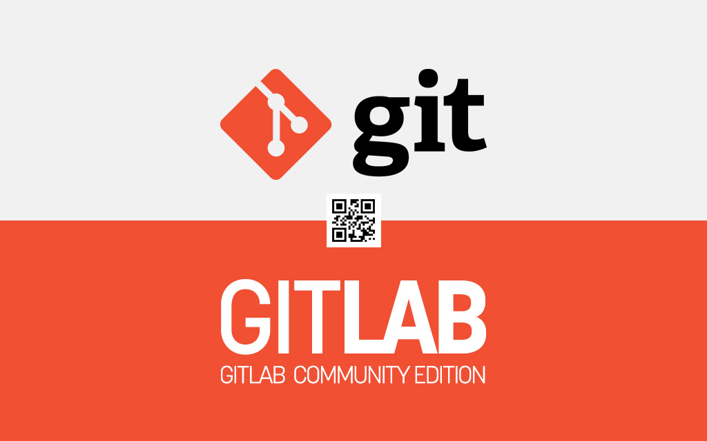
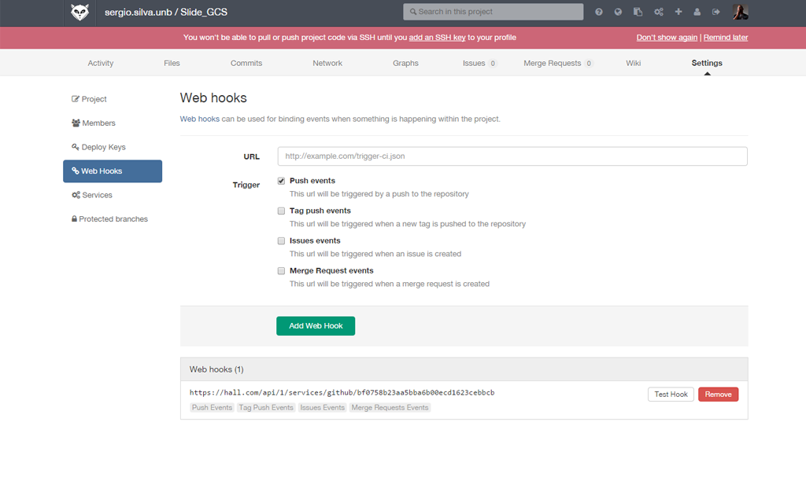
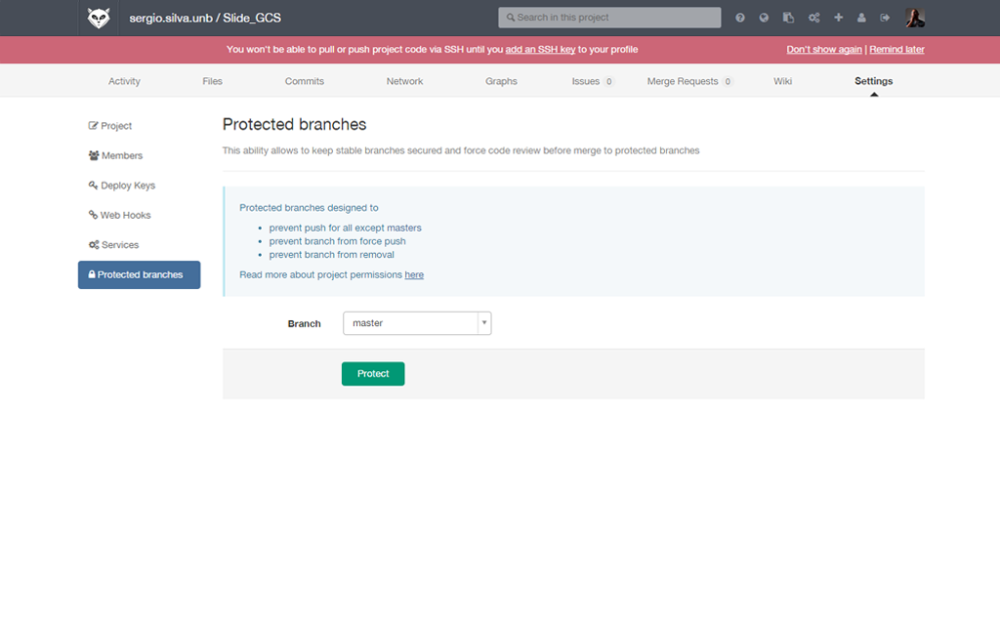
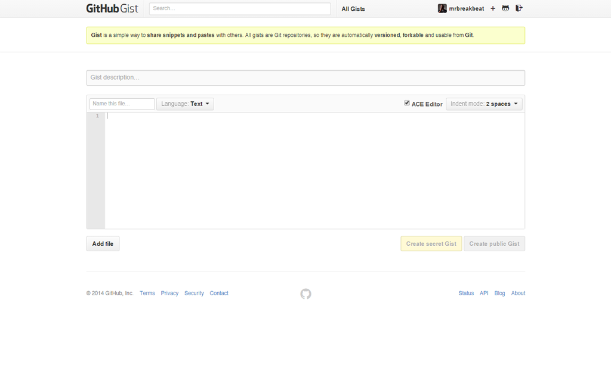
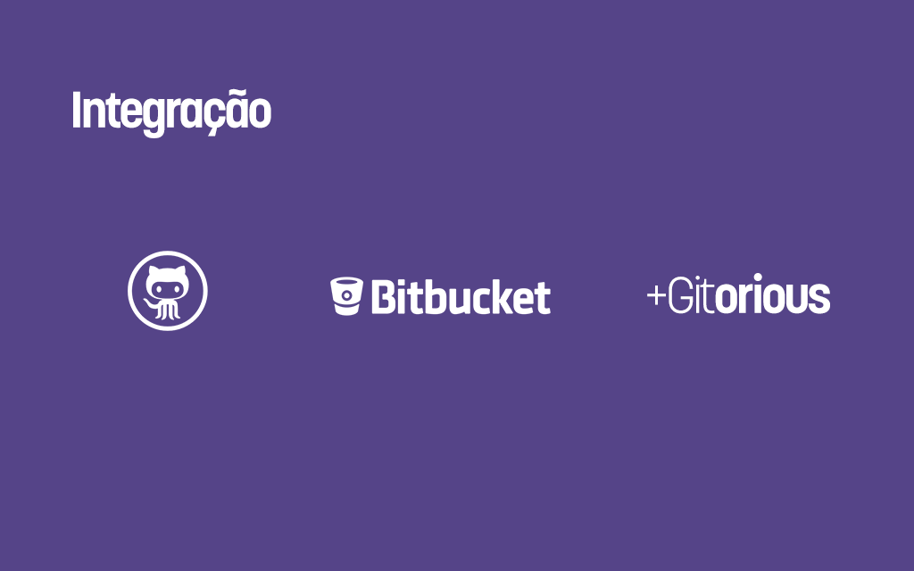
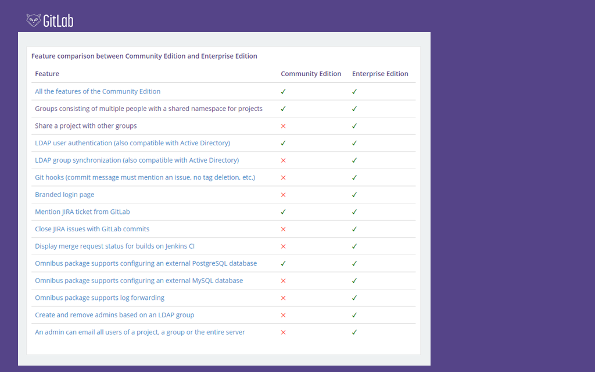
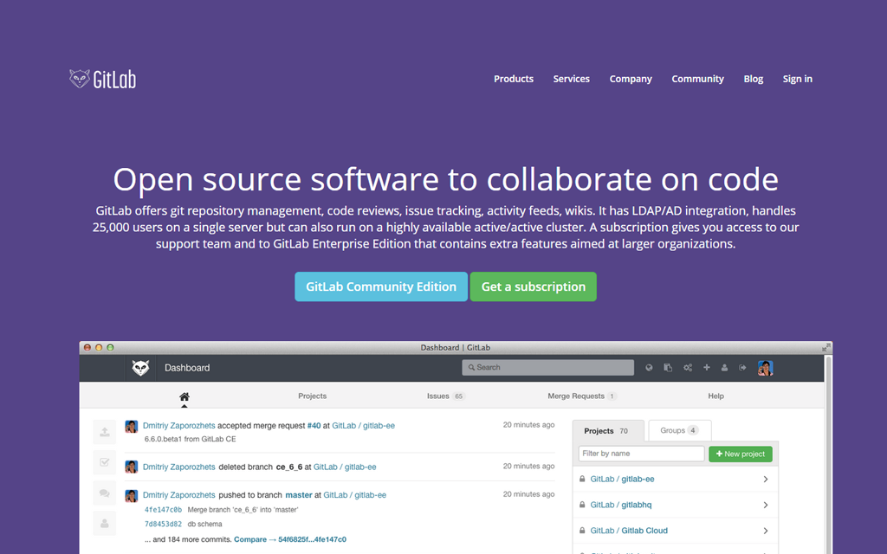
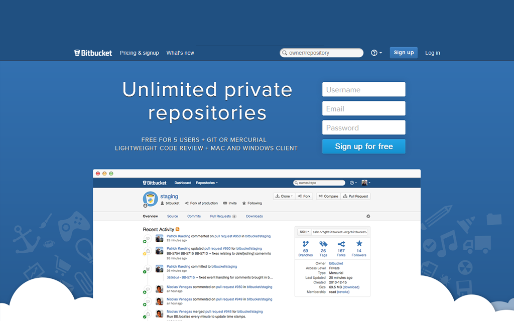

Git+GitLab
Sérgio Silva | Leonn Ferreira | Larissa Rodrigues

O que é?
O que é o GitLab
Ferramenta de gerenciamento de repositórios
git
em um servidor centralizado.
Que nos permite:
Controle completo de seus repositórios
Controle da visibilidade dos projetos (Public / Private)
+ sobre o GitLab
Used by more than
100,000 organizations
, GitLab is the most popular solution to manage Git repositories on-premises
Manage Git repositories with fine grained access controls that keep your code secure.
Perform code reviews and enhance collaboration with merge requests
Completely free and open source
(MIT Expat license)
Concorrentes
Concorrentes
GitHub Enterprise
Gitorious
Atlassian Stash (Bitbucket)
Compatibilidade
Disponível para seguintes distribuições:
Ubuntu 12.04
Ubuntu 14.04
Debian 7
CentOS 6
CentOS 7
Requisitos
Requisitos de Instalação
2 cores is the recommended number of cores and supports up to 500 users
2GB RAM is the recommended memory size and supports up to 500 users
Database: Recommended database size is 1 MB per user.
Funcionalidades
Principais Funcionalidades
Issue Tracking
Wiki
Graphs
* Protected Branches
Web Hooks
Snippets



Integração

Recursos
Mais alguns recursos do GitLab
GitLab Shell
Gitlab CE
Gitlab EE
Gitlab CI
Licenças

Website

Alternativas
Alternativas ao GitLab
Atlassian Stash (Bitbucket)
https://www.atlassian.com/software/stash/pricing
GitHub Enterprise
https://enterprise.github.com/
Gitorious
https://gitorious.org/

Tutorial
Servidor
Disciplina
Paulo Meirelles
paulo@softwarelivre.org.br
GCS - Gerência de Configuração de Software